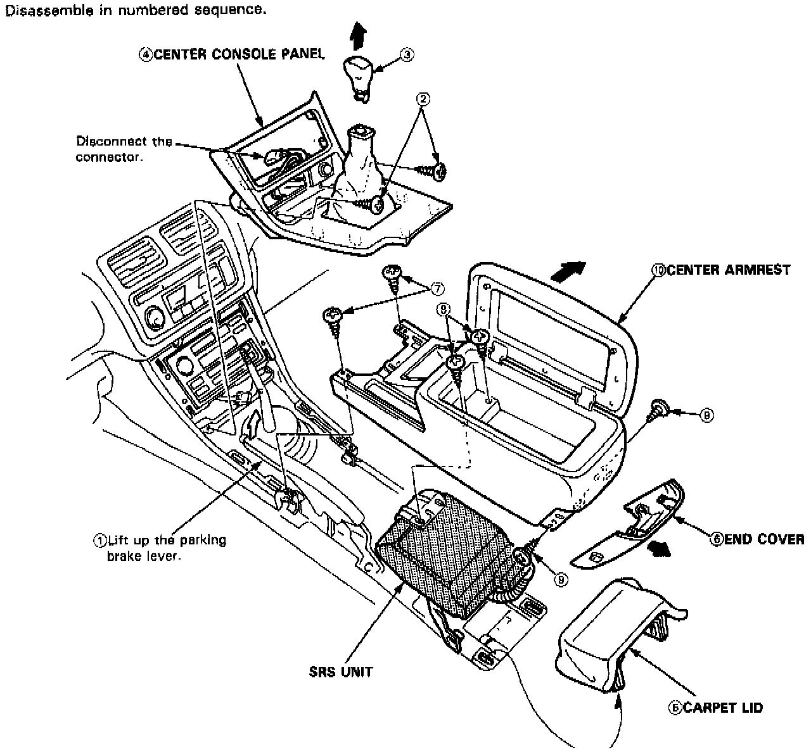

Arm Rest: Service and Repair
CENTER CONSOLE PANEL/ARMREST REPLACEMENTNOTE: SRS wire harnesses are routed near the center console panel and center armrest.
CAUTION:
- All SRS wiring harnesses are covered with yellow outer insulation.
- Before disconnecting any part of the SRS wire harness, turn the ignition switch off, disconnect the negative and positive battery cables (L and LS models: get the anti-theft radio code number!), wait for at least three minutes, and install the short connectors.
- Replace the entire affected SRS harness assembly if it has an open circuit or damaged wiring.

1. Disassemble in numbered sequence shown in image.
2. Installation is the reverse of the removal procedure.